Deploy a Grails app to Google Cloud
Learn how to deploy a Grails 3 application to Google App Engine Java Flexible Environment, integrate with Google Cloud Storage and Google Cloud SQL
Authors: Sergio del Amo, Mathew Moss
Grails Version: 4
1 Grails Training
Apache Grails Training
Apache Grails is now part of the Apache Software Foundation. The community-maintained training catalog is being migrated; in the meantime see the Learning page for current resources, recorded talks, and links to other community-supplied training material.
2 Getting Started
In this guide, you are going to deploy a Grails 3 application to Google App Engine Flexible Environment, upload images to Google Cloud Storage and use a MySQL database provided by Cloud SQL.
3 Costs
This guide uses paid services; you may need to enable Billing in Google Cloud to complete some steps in this guide.
4 What you will need
To complete this guide, you will need the following:
-
Some time on your hands
-
A decent text editor or IDE
-
JDK 1.7 or greater installed with JAVA_HOME configured appropriately
5 How to Complete
To get started do the following:
Download and unzip the source or Clone the Git repository:
git clone https://github.com/grails-guides/grails-google-cloud.gitThe Grails guides repositories contain two folders:
-
initialInitial project. A simple Grails app with additional some code to give you a head-start. -
completeA completed example. It is the result of working through the steps presented by the guide and applying those changes to the initial folder.
To complete the guide, go to the initial folder
cd initial
and follow the instructions in the next sections.
or you can go right to the completed example:
cd complete
Although you can go right to the completed example, in order to deploy the app you would need to complete several configuration steps in Google Cloud:
-
Signup for Cloud SDK and install Cloud SDK.
-
Initialize an App Engine application within the current Google Cloud project.
-
Create a Mysql Database in an instance of Cloud SQL.
-
Enable Cloud Datastore API for the project
Moreover, You would need to modify your application.yml configuration to point
to the correct Cloud SQL database and Cloud Storage Bucket. Checkout the guide
steps for more details.
6 Writing the application
6.1 Domain Class
We want to persist some test data in a Cloud SQL database. The initial project
includes a Grails Domain Class to map Book instances to a MySQL table.
A domain class fulfills the M in the Model View Controller (MVC) pattern and represents a persistent entity that is mapped onto an underlying database table. In Grails a domain is a class that lives in the grails-app/domain directory.
link:../snippets/grails-app/domain/demo/Book.groovy[role=include]6.2 Seed Data
When the application starts we are going to add some seed data. In particular, we persist a list of books.
Modify BootStrap.groovy.
link:../snippets/grails-app/init//demo/BootStrap.groovy[role=include]6.3 Display Books
As the home page of the application, we want to display the books persisted when the application starts; those we saved in BootStrap.groovy
We map the home page to be resolved by BookController by modifying UrlMappings.groovy
Replace:
grails-app/controllers/demo/UrlMappings.groovy
"/"(view:"/index")
with:
grails-app/controllers/demo/UrlMappings.groovy
'/'(controller: 'book')
We have modified slightly the output of Grails static scaffolding command
generate-all to provide CRUD functionality for the domain class Book.
You can find the code: BookController, BookGormService and GSP views in
the initial project.
7 Cloud SDK
Signup for Google Cloud Platform and create a new project:
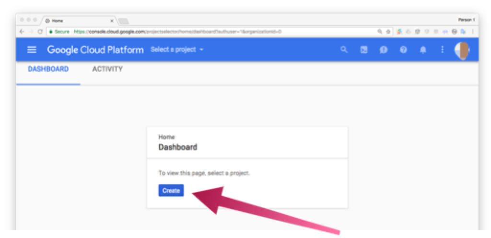
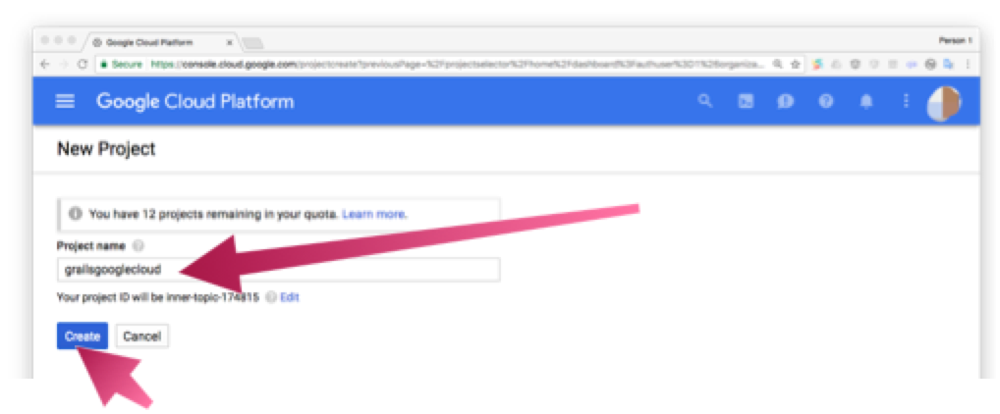
We named the project grailsgooglecloud
Install Cloud SDK for your operating system.
After you have installed the SDK, run the init command in your terminal:
$ gcloud init
It will prompt you to select the Google account and the project which you want to use.
8 Google App Engine
We are going to deploy the Grails application developed in this guide to the Google App Engine Flexible Environment
App Engine allows developers to focus on doing what they do best: writing code. Based on Google Compute Engine, the App Engine flexible environment automatically scales your app up and down while balancing the load. Microservices, authorization, SQL and NoSQL databases, traffic splitting, logging, versioning, security scanning, and content delivery networks are all supported natively.
Run the command:
gcloud app create
to initialize an App Engine application within the current Google Cloud project.
| You will need to choose the region where you want your App Engine Application located. |
8.1 Google App Engine Gradle Plugin
To deploy to App Engine, we are going to use the Google App Engine Gradle Plugin.
Add the plugin as a buildscript dependency:
link:../snippets/build.gradle[role=include]Apply the plugin:
link:../snippets/build.gradle[role=include]8.2 Application Deployment Configuration
To deploy to Google App Engine, we need to add the file src/main/appengine/app.yaml
It describes the application’s deployment configuration:
link:{sourceDir}/src/main/appengine/app.yaml[role=include]Here, app.yaml specifies the runtime used by the app, and sets env: flex,
specifying that the app uses the flexible environment.
The minimal app.yaml application configuration file shown above is sufficient for a simple Grails application.
Depending on the size, complexity, and features that your application uses, you may need to change and extend this basic
configuration file. For more information on what can be configured via app.yaml, please see the
Configuring Your App with app.yaml
guide.
|
For more information on how the Java runtime works, see Java 8 / Jetty 9.3 Runtime.
8.3 SpringBoot Jetty
As shown in the previous app engine configuration file, we are using Jetty.
Grails is built on top of SpringBoot. Following SpringBoot’s documentation, we need to do the following changes to deploy to Jetty instead of Tomcat.
Replace:
compile "org.springframework.boot:spring-boot-starter-tomcat"with:
provided "org.springframework.boot:spring-boot-starter-jetty"
it is important you set the spring-boot-starter-jetty dependency as provided.
|
We need to exclude several dependencies too:
link:../snippets/build.gradle[role=include]9 Cloud SQL
The Grails application developed during this guide is going to use a MySQL database created with Cloud SQL
Cloud SQL is a fully-managed database service that makes it easy to set up, maintain, manage, and administer your relational PostgreSQL BETA and MySQL databases in the cloud. Cloud SQL offers high performance, scalability, and convenience. Hosted on Google Cloud Platform, Cloud SQL provides a database infrastructure for applications running anywhere.
Enable Cloud SQL API
If you have not enabled Cloud SQL and Cloud SQL API already, go to your project dashboard and enable them.

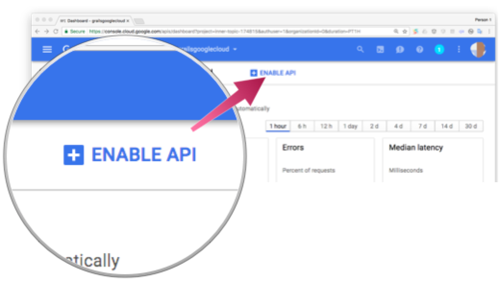
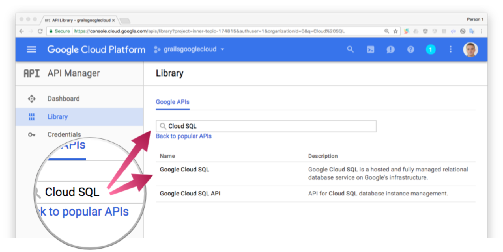
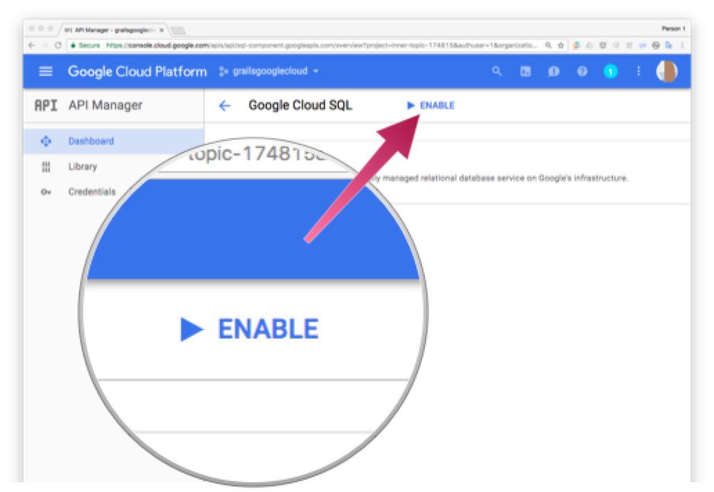
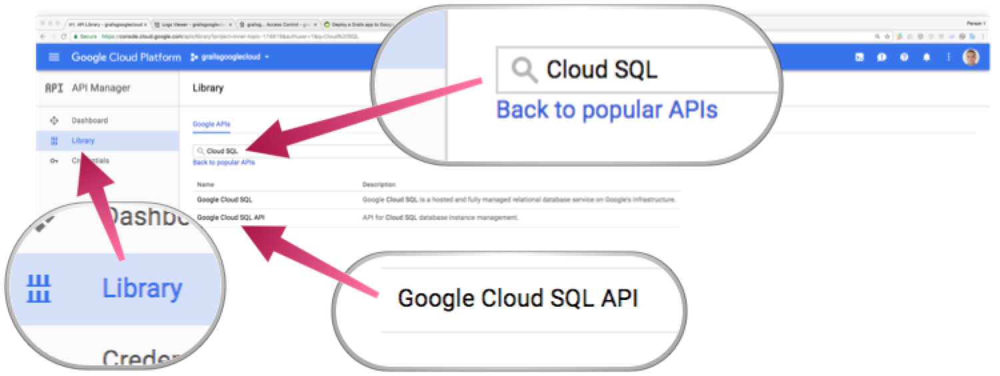
9.1 Create Cloud SQL Instance
We are going to create a new instance of Cloud SQL associated to the same project we created before.
Go to the Cloud SQL section of the console:
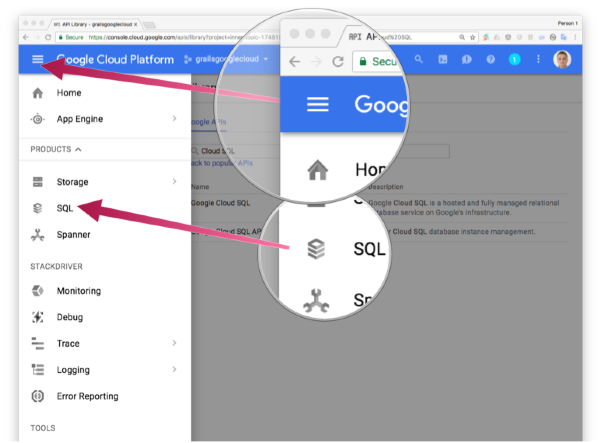
Next screenshots illustrate the process:
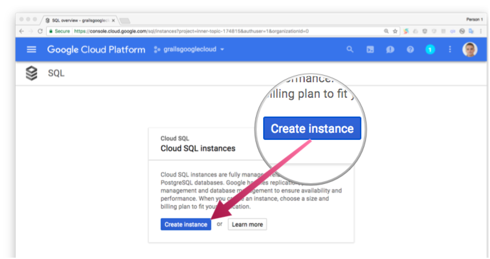
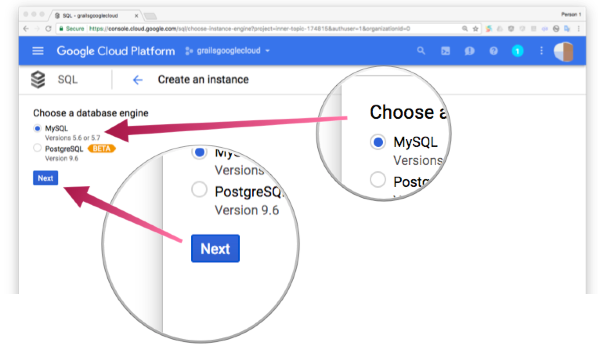
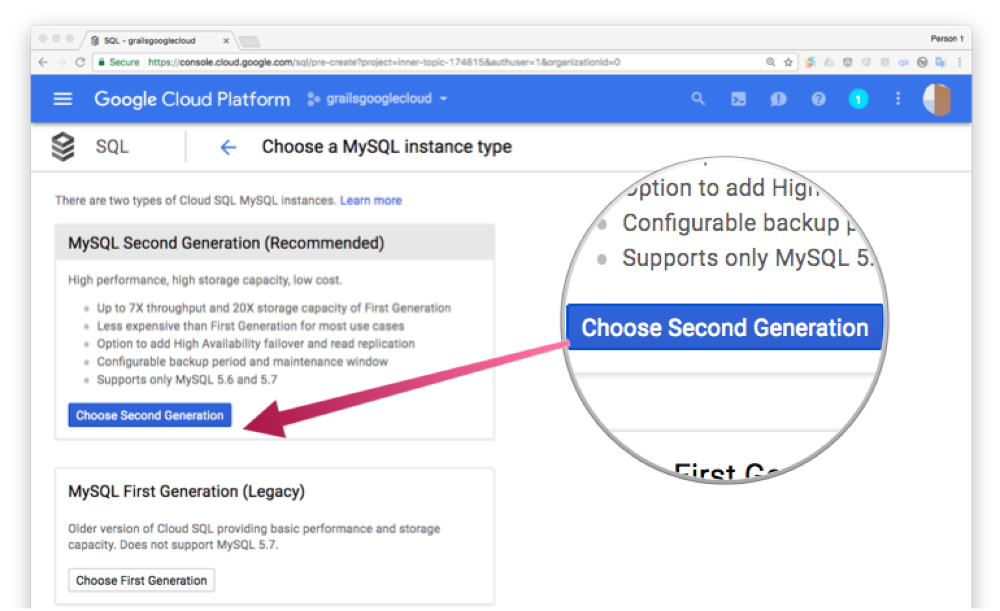
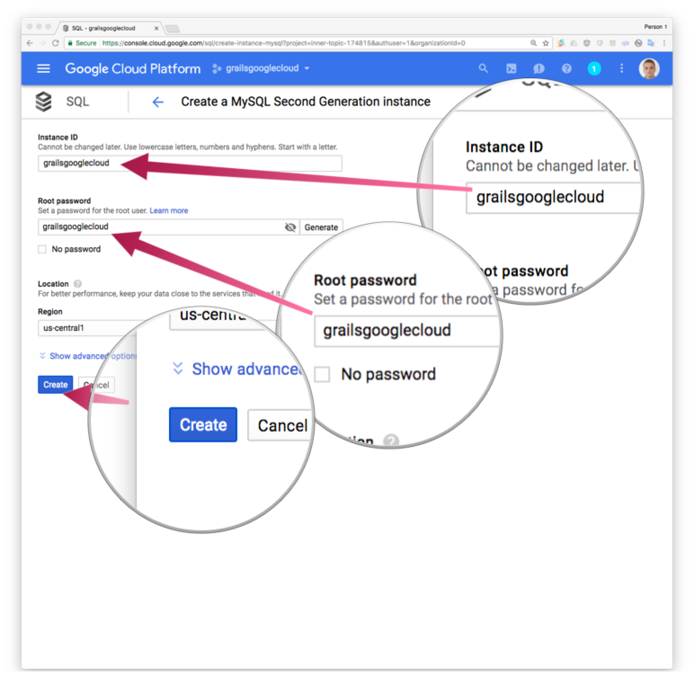
Once the instance is ready, we create a database:
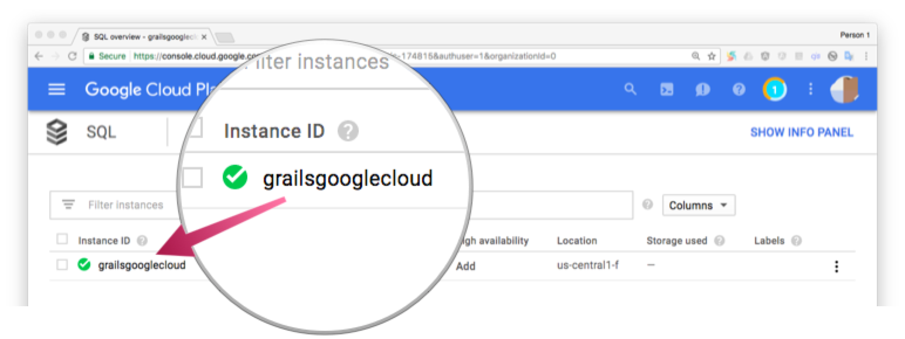
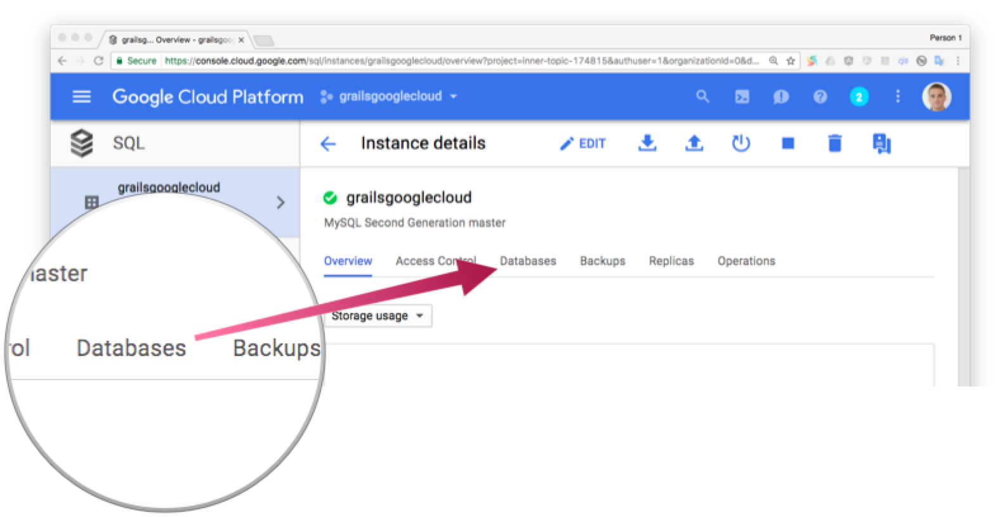
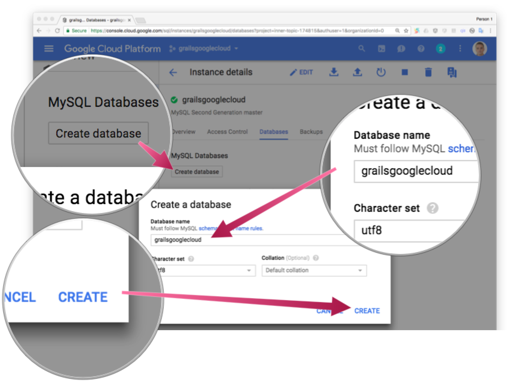
9.2 Datasource using Cloud SQL
As described in Using Cloud SQL with a Flexible Environment documentation, we need to add several runtime dependencies and configure the production url to use the Cloud SQL MySQL database we created before.
Add MySQL dependencies; JDBC library and Cloud SQL MySQL Socket Factory.
link:../snippets/build.gradle[role=include]Replace the production environment datasource configuration to point to the
Cloud SQL MySQL database in application.yml
environments:
link:../snippets/grails-app/conf/application.yml[role=include]The production datasource url uses a custom url which is built with several components:
jdbc:mysql://google/{DATABASE_NAME}?socketFactory=com.google.cloud.sql.mysql.SocketFactory&cloudSqlInstance={INSTANCE_NAME}&useSSL=true
-
DATABASE_NAME Use the database name you used when you created the database.
-
INSTANCE_NAME You can find your instance name in your Cloud SQL instance details:
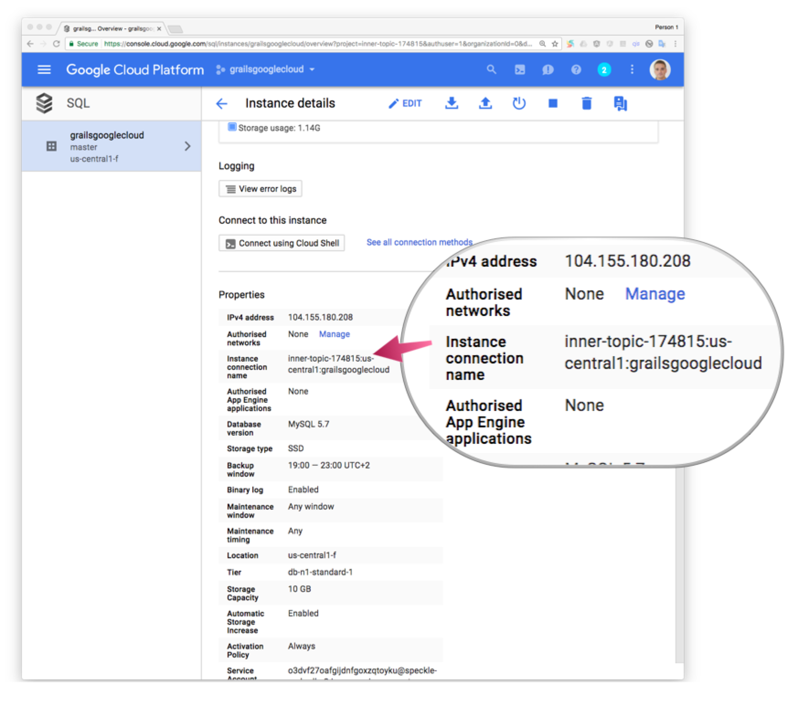
-
USERNAME / PASSWORD For this guide, we are using username:
rootand the password we entered when we created the SQL instance; see previous sections.
Cloud SQL Socket Factory for JDBC drivers Github Repository
contains a tool in examples/getting-started that can help generate the JDBC
URL and verify that connectivity can be established.
10 Cloud Storage
We allow our users to upload a book cover image. To store the images in the Cloud, we use Google Cloud Storage
Google Cloud Storage is unified object storage for developers and enterprises, from live data serving to data analytics/ML to data archiving.
Enable Cloud Storage API for the project, if you have not enabled it already.


You can create a Cloud Storage Bucket as illustrated in the images below. We name the bucket grailsbucket


Add Cloud Storage dependency to your project dependencies
link:../snippets/build.gradle[role=include]We need to exclude com.google.guava:guava-jdk5 too:
link:../snippets/build.gradle[role=include]Append these configuration (Cloud Storage Bucket and Project id) parameters to application.yml
link:../snippets/grails-app/conf/application.yml[role=include]These configuration parameters are used by the services described below.
Create a Grails Command Object to manage file upload parameters.
link:../snippets/grails-app/controllers/demo/FeaturedImageCommand.groovy[role=include]Add two controller actions to BookController:
link:../snippets/grails-app/controllers/demo/BookController.groovy[role=include]The previous controller actions use a service to manage our business logic. Create `UploadBookFeaturedImageService.groovy`:
link:../snippets/grails-app/services/demo/UploadBookFeaturedImageService.groovy[role=include]The code which interacts with Cloud Storage is encapsulated in a service:
link:../snippets/grails-app/services/demo/GoogleCloudStorageService.groovy[role=include]If the upload of an image to Google Cloud is successful, we save the reference to the media url in our domain class.
Add this method to the BookGormService class
link:../snippets/grails-app/services/demo/BookGormService.groovy[role=include]We need to add one GSP file to render the upload form:
link:../snippets/grails-app/views/book/editFeaturedImage.gsp[role=include]11 Deploying the app
To deploy the app to Google App Engine run:
$ ./gradlew appengineDeploy
Initial deployment may take a while. When finished, you will be able to access your app:
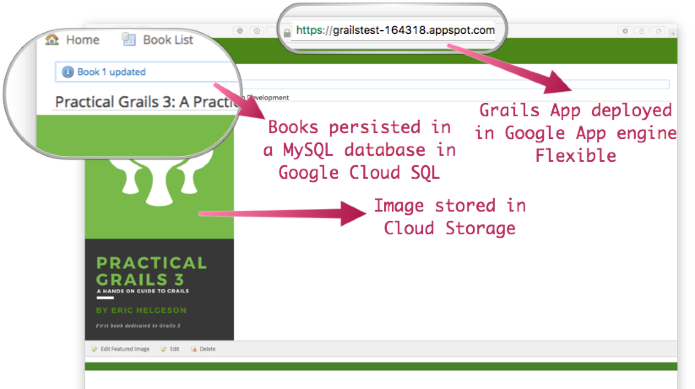
If you go to the Versions section in the App Engine administration panel, you will see the deployed app.
12 Logging
For the version which you would like to inspect, select Logs in the diagnose dropdown:
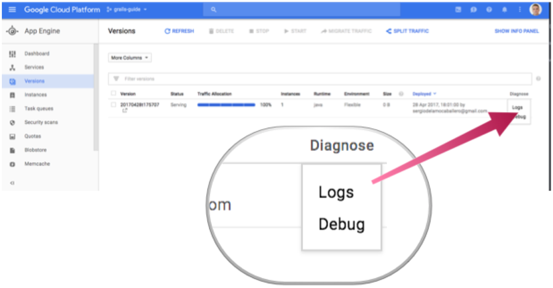
Application log messages written to stdout and stderr are automatically collected and can be viewed in the Logs Viewer.
We are going to create a controller and log with level INFO and verify the log statement is visible in the Log Viewer.
link:../snippets/grails-app/controllers/demo/LegalController.groovy[role=include]We add the next line to grails-app/conf/logback.groovy
logger 'demo', INFO, ['STDOUT'], false
to log INFO statements of classes under package demo to STDOUT appender with additivity false
If you redeploy the app to App Engine and access the /legal end point, you will see the logging statements in Log Viewer.
Check Writing Application Logs documentation to read more about logs in the Flexible Environment.
Write your application logs using stdout for output and stderr for errors. Note that this does not provide log levels that you can use for filtering in the Logs Viewer; however, the Logs Viewer does provide other filtering, such as text, timestamp, etc.
13 Cleaning Up
After you’ve finished this guide, you can clean up the resources you created on Google Cloud Platform so you won’t be billed for them in the future. The following sections describe how to delete or turn off these resources.
Deleting the project
The easiest way to eliminate billing is to delete the project you created for the tutorial.
To delete the project:
| Deleting a project has the following consequences: |
-
If you used an existing project, you’ll also delete any other work you’ve done in the project.
-
You can’t reuse the project ID of a deleted project. If you created a custom project ID that you plan to use in the future, you should delete the resources inside the project instead. This ensures that URLs that use the project ID, such as an appspot.com URL, remain available.
-
If you are exploring multiple tutorials and quickstarts, reusing projects instead of deleting them prevents you from exceeding project quota limits.
In the Cloud Platform Console, go to the Projects page.
In the project list, select the project you want to delete and click Delete project. After selecting the checkbox next to the project name, click Delete project
In the dialog, type the project ID, and then click Shut down to delete the project.
Deleting or turning off specific resources
You can individually delete or turn off some of the resources that you created during the tutorial.
Deleting app versions
To delete an app version:
In the Cloud Platform Console, go to the App Engine Versions page.
Click the checkbox next to the non-default app version you want to delete.
| The only way you can delete the default version of your App Engine app is by deleting your project. However, you can stop the default version in the Cloud Platform Console. This action shuts down all instances associated with the version. You can restart these instances later if needed. |
In the App Engine standard environment, you can stop the default version only if your app has manual or basic scaling.
Click the Delete button at the top of the page to delete the app version.
Deleting Cloud SQL instances
To delete a Cloud SQL instance:
In the Cloud Platform Console, go to the SQL Instances page.
Click the name of the SQL instance you want to delete.
Click the Delete button at the top of the page to delete the instance.
Deleting Cloud Storage buckets
To delete a Cloud Storage bucket:
In the Cloud Platform Console, go to the Cloud Storage browser.
Click the checkbox next to the bucket you want to delete.
Click the Delete button at the top of the page to delete the bucket.
14 Learn More
If you want to learn more about Google Cloud and Grails integration, checkout a more complete sample app.
The Google Cloud Bookshelf with Grails application shows how to use a variety of Google Cloud Platform products, including some of the services described in this guides and other services such as:
-
Google Cloud Vision API
-
Google Cloud Translation API
-
Authentication using Google Identity Platform
15 Help With Grails
Help with Apache Grails
Apache Grails is supported by an active community of contributors and the Apache Software Foundation. If you need help working through a guide, want to discuss the framework, or have run into something that looks like a bug, the channels below are the right place to start.
-
Slack - real-time conversation with the Apache Grails community.
-
dev@grails.apache.org">Developer mailing list - design discussions and contributor coordination.
-
users@grails.apache.org">Users mailing list - end-user questions and answers.
-
Issue tracker on GitHub - file a bug or feature request against the framework.
For Grails plugins, see the matching project on the apache org or the plugin’s own GitHub repository.